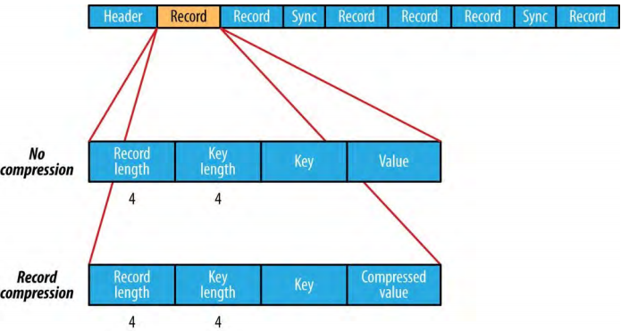
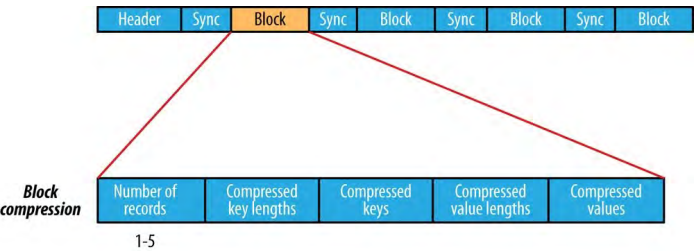
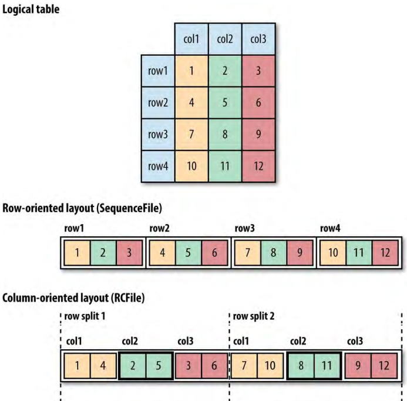

4、基于文件的数据结构（File-Based Data Structures）
对于某些应用，需要指定数据结构来保存数据。为了执行基于MapReduce的处理，把每个二进制数据大块（blob）放入属于自己的文件是不可扩展的，所以Hadoop针对这些情形开发了许多高级别的容器。
4.1、SequenceFile
假如一个日志文件每条日志记录是新的一行文本。如果要记录二进制类型，纯文本不是合适的格式。Hadoop的SequenceFile类为二进制的键值对提供了一个持久化数据结构。把它用作日志文件格式时，可以指定键（比如代表时间戳的LongWritable），值可以指定为代表记录的日志的数量的Writable。
SequenceFile也可以用作小文件的容器。HDFS和MapReduce是针对大文件的，所以打包文件到SequenceFile中会使存储和处理小文件更加高效。
4.1.1、写SequenceFile
使用SequenceFile类的createWriter()方法（返回一个SequenceFile.Writer实例）来创建SequenceFile文件。它有一些重载的版本，但是它们都需要指定一个用来写文件的流（FSDataOutputStream或者FileSystem和Path），一个Configuration对象和键、值的类型；可选的参数包括压缩类型和codec，用于写进度的Progressable回调，和保存在SequenceFile头中的Metadata实例。
SequenceFile中的键和值的类型不必是Writables。任何可以被Serialization序列化和反序列化的类型都可以使用。
使用SequenceFile.Writer实例的append()方法写入键值对，结束的时候调用它的close()方法（SequenceFile.Writer实现了java.io.Closeable）。在写入每条记录之前，可以调用getLength()方法获取文件中的当前位置
例 5-10、写一个SequenceFile
public class SequenceFileWriteDemo {
private static final String[] DATA = {
"One, two, buckle my shoe",
"Three, four, shut the door",
"Five, six, pick up sticks",
"Seven, eight, lay them straight",
"Nine, ten, a big fat hen"
};
public static void main(String[] args) throws IOException {
String uri = args[0];
Configuration conf = new Configuration();
FileSystem fs = FileSystem.get(URI.create(uri), conf);
Path path = new Path(uri);
IntWritable key = new IntWritable();
Text value = new Text();
SequenceFile.Writer writer = null;
try {
writer = SequenceFile.createWriter(fs, conf, path,
key.getClass(), value.getClass());
for (int i = 0; i < 100; i++) {
key.set(100 - i);
value.set(DATA[i % DATA.length]);
System.out.printf("[%s]\t%s\t%s\n", writer.getLength(), key, value);
writer.append(key, value);
}
} finally {
IOUtils.closeStream(writer);
}
}
}
上例的执行结果：
% hadoop SequenceFileWriteDemo numbers.seq
[128] 100 One, two, buckle my shoe
[173] 99 Three, four, shut the door
[220] 98 Five, six, pick up sticks
[264] 97 Seven, eight, lay them straight
[314] 96 Nine, ten, a big fat hen
[359] 95 One, two, buckle my shoe
[404] 94 Three, four, shut the door
[451] 93 Five, six, pick up sticks
[495] 92 Seven, eight, lay them straight
[545] 91 Nine, ten, a big fat hen…
[1976] 60 One, two, buckle my shoe
[2021] 59 Three, four, shut the door
[2088] 58 Five, six, pick up sticks
[2132] 57 Seven, eight, lay them straight
[2182] 56 Nine, ten, a big fat hen…
[4557] 5 One, two, buckle my shoe
[4602] 4 Three, four, shut the door
[4649] 3 Five, six, pick up sticks
[4693] 2 Seven, eight, lay them straight
[4743] 1 Nine, ten, a big fat hen
4.1.2、读取SequenceFile
从头到尾读SequenceFile就是创建一个SequenceFile.Reader实例并且通过重复调用它的next()方法（重载的方法）迭代记录的过程。使用哪个next()方法依使用的序列化框架而定。如果使用的是Writable类型使用如下方法：
public boolean next(Writable key, Writable val)
如果键值对读取成功返回true，否则返回false。
对于非Writable的序列化框架（例如Apache Thrift），要使用如下两个方法：
public Object next(Object key) throws IOException
public Object getCurrentValue(Object val) throws IOException
这种情况下要确保使用的序列化框架在io.seralizations属性中设置过了。如果next()方法返回非null的对象，则从流中获取了键值对，并且可以使用getCurrentValue()方法获取值。如果next()方法返回null，则达到文件末尾。
例 5-11、读取SequenceFile
public class SequenceFileReadDemo {
public static void main(String[] args) throws IOException {
String uri = args[0];
Configuration conf = new Configuration();
FileSystem fs = FileSystem.get(URI.create(uri), conf);
Path path = new Path(uri);
SequenceFile.Reader reader = null;
try {
reader = new SequenceFile.Reader(fs, path, conf);
Writable key = (Writable)
ReflectionUtils.newInstance(reader.getKeyClass(), conf);
Writable value = (Writable)
ReflectionUtils.newInstance(reader.getValueClass(), conf);
long position = reader.getPosition();
while (reader.next(key, value)) {
String syncSeen = reader.syncSeen() ? "*" : "";// if see sync point,output a mark
System.out.printf("[%s%s]\t%s\t%s\n", position, syncSeen, key, value);
position = reader.getPosition(); // beginning of next record
}
} finally {
IOUtils.closeStream(reader);
}
}
}
使用SequenceFile.Reader的getKeyClass()和getValueClass()方法可以获取键值的类型，然后使用ReflectionUtils来创建键值的实例。这样可以支持任意Writable键值类型的SequenceFile读取。
这个例子展示了SequenceFile的位置的同步点（sync points）。同步点是流中的一个点，用于在reader“丢失”的情况下重新同步记录边界（例如在seek到流中任意位置之后）。同步点由SequenceFile.Writer记录，在写SequenceFile文件时，没写几条记录就插入一个特别的类目（entry）来标记同步点。这些类目很小只需要很少的存储开销（小于1%）。同步点总是和记录边界对齐。
例子执行结果：
% hadoop SequenceFileReadDemo numbers.seq
[128] 100 One, two, buckle my shoe
[173] 99 Three, four, shut the door
[220] 98 Five, six, pick up sticks
[264] 97 Seven, eight, lay them straight
[314] 96 Nine, ten, a big fat hen
[359] 95 One, two, buckle my shoe
[404] 94 Three, four, shut the door
[451] 93 Five, six, pick up sticks
[495] 92 Seven, eight, lay them straight
[545] 91 Nine, ten, a big fat hen
[590] 90 One, two, buckle my shoe…
[1976] 60 One, two, buckle my shoe
[2021*] 59 Three, four, shut the door
[2088] 58 Five, six, pick up sticks
[2132] 57 Seven, eight, lay them straight
[2182] 56 Nine, ten, a big fat hen…
[4557] 5 One, two, buckle my shoe
[4602] 4 Three, four, shut the door
[4649] 3 Five, six, pick up sticks
[4693] 2 Seven, eight, lay them straight
[4743] 1 Nine, ten, a big fat hen
由两种seek SequenceFile中指定位置的方法。第一种是seek()方法，定位reader到文件中的指定点。例如：
reader.seek(359);
assertThat(reader.next(key, value), is(true));
assertThat(((IntWritable) key).get(), is(95));
但是，如果seek()方法的指定位置不是记录边界，会seek失败并抛出IOException。
reader.seek(360);
reader.next(key, value);// fails with IOException
第二种方法使用同步点找到记录边界。SequenceFile.Reader的方法sync(long position)把reader定位到给定position之后的下一个同步点（如果position之后没有同步点，会把reader定位到文件的末尾）。
reader.sync(360);
assertThat(reader.getPosition(), is(2021L));
assertThat(reader.next(key, value), is(true));
assertThat(((IntWritable) key).get(), is(59));
注意：SequenceFile.Writer有一个叫做sync()的方法，用于在流中的当前位置插入同步点。
SequenecFile文件作为MapReduce输入的时候，同步点就很有用了，因为它们使文件可以分割并且让各部分可以被独立的map tasks分别处理。
4.1.3、使用命令行接口展示SequenceFile（Displaying a SequenceFile with the command-line interface）
hadoop fs命令有一个-text选项来以文本格式展示sequence Files。它会查看文件的魔法数字（magic number）以便检测文件类型并且恰当的把它转化为文本。它可以识别gzipped文件，sequence文件，Avro数据文件；另外，它假设输入为纯文本。
对于sequence文件，如果键、值是有意义的字符串，这个命令就开始发挥作用。如果使用自定义的键值类型，要确保这些类型在Hadoop的classpath中。命令运行例子：
% hadoop fs -text numbers.seq | head
100 One, two, buckle my shoe
99 Three, four, shut the door
98 Five, six, pick up sticks
97 Seven, eight, lay them straight
96 Nine, ten, a big fat hen
95 One, two, buckle my shoe
94 Three, four, shut the door
93 Five, six, pick up sticks
92 Seven, eight, lay them straight
91 Nine, ten, a big fat hen
4.1.4、SequenceFiles分类与合并（Sorting and merging SequenceFiles）
分类（合并）一个或者多个sequence文件的最强大的方法是使用MapReduce。MapReduce本质上是并行的，并且可以指定reducers的数量，这决定了输出分区的数量。例如，指定一个reducer，则只有一个输出文件。使用Hadoop自带的sort例子，通过指定输入和输出为sequence文件、并设定键和值的类型：
% hadoop jar \
$HADOOP_HOME/share/hadoop/mapreduce/hadoop-mapreduce-examples-*.jar \
sort -r 1 \
-inFormat org.apache.hadoop.mapreduce.lib.input.SequenceFileInputFormat \
-outFormat org.apache.hadoop.mapreduce.lib.output.SequenceFileOutputFormat \
-outKey org.apache.hadoop.io.IntWritable \
-outValue org.apache.hadoop.io.Text \
numbers.seq sorted
% hadoop fs -text sorted/part-r-00000 | head
1 Nine, ten, a big fat hen
2 Seven, eight, lay them straight
3 Five, six, pick up sticks
4 Three, four, shut the door
5 One, two, buckle my shoe
6 Nine, ten, a big fat hen
7 Seven, eight, lay them straight
8 Five, six, pick up sticks
9 Three, four, shut the door
10 One, two, buckle my shoe
可以用于替换MapReduce进行sequenceFile sort/merge的方式是使用SequenceFile.Sorter类，它有一些sort()和merge()方法。这些方法早于MapReduce并且是比MapReduce低级的方法，所以通常更倾向于是使用MapReduce进行SequenceFile的分类与合并。
4.1.4、SequenceFile格式
sequence 文件由一个头和若干记录组成（如图5-2）。
图5-2 The internal structure of a sequence file with no compression and with record compression

sequence文件的头三个字节是SEQ字节，作为魔法数字（magic number）；紧跟的一个字节代表版本数字。文件头包含其它属性，包括键值类型的名字，压缩详情，用户定义的metadata，和同步标识（sync marker）。重新调用同步标识用于把reader从文件中的任意位置同步到记录边界。每个文件都有一个随机生成的同步标识，它的值保存在文件头中。同步标识出现在sequence文件的记录之间。它们只占用小于1%的存储开销，并且不必出现在任意两个记录之间。
sequence文件中记录（record）的内部格式因是否启用压缩而不同，并且record compression不同于block compression。
如果没有启用压缩（默认情况下），每条记录由记录长度（字节），键长度、键、值组成。长度区域都是4字节整数。键和值都使用对应类的Serialization进行序列化。
记录压缩格式几乎与不启用压缩格式相同，除了值字节是使用文件头中定义的codec进行压缩的。注意，键不是压缩的。
块压缩（如图 5-3），一次压缩多条记录；因而它比记录压缩更紧凑、使用更普遍；因为它可以利用记录间的相似性。记录被添加到一个块，直到达到一个最小的字节大小（由io.seqfile.compress.blocksize属性定义，默认是1,000,000字节）。在每个块开始之前写入一个同步标识。块的格式是一个指示块中记录数量的区域，跟着是四个压缩的区域：键长度、键、值长度、值。
图 5-3 The internal structure of a sequence file with block compression

4.2、MapFile
MapFile是一个带有索引（允许通过键进行查询）的分类的SequenceFile。索引本身是一个SequenceFile，包含一个map中键的因子（每128键，默认）。理念是，这个索引可以加载进内存中提供对主数据文件（main data file，是包含所有map条目、以分类的键排序的另一个SequenceFile）的快速查询。
MapFile提供与SequenceFile非常类似的读写接口——需要注意的是，它使用MapFile.Writer进行写操作，map条目必须按顺序添加，否则，会抛出IOException。
4.2.1、MapFile变种（MapFile variants）
在基本的键值MapFile接口基础上，Hadoop有一些变种：
- SetFile 一个MapFile特例，存储一个set的Writable类型键，键必须按照指定的顺序添加；
- ArrayFile 键是数组中元素对应的整数索引，值是Writable值的MapFile；
- BloomMapFile 提供快速版本的get()方法的MapFile。
4.3、其它文件格式和面向列的格式（Other File Formats and Column-Oriented Formats）
sequecne文件和map文件是Hadoop中最老的二进制文件格式，有比它们更好地选择值得考虑。
Avro数据文件，与sequence文件类似，被设计用于大规模数据处理——它是紧凑的、可分割的——但是它可以用于不同编程语言。Avro数据文件中的对象通过schema描述，而不是实现Writable接口的java代码（sequence文件的情况）。Avro数据文件被Hadoop生态系统中的组件广泛支持，它是一个二进制格式的好的默认选择。
Sequence文件、map文件、Avro数据文件都是面向行的文件格式，意味着每行的值连续地保存在文件中。在面向列的格式中，文件的行被分为行分片（row splits），每个分片以面向列的风格保存：每行的第一列首先保存，接着是每行第二列的值，依此类推。如图 5-4。
面向列的表示，允许在查询中跳过不需要访问列。例如，查询图5-4中第2列；对于面向行的存储，即使只需要读第二列，也要把整行加载到内存中。延迟反序列化（Lazy deserialization）通过只反序列化要访问的列节省了一些处理周期，但是它不能避免从磁盘读取每行字节的开销。使用面向列的存储，只有列2（col2）部分需要被读取到内存中。通常，面向列的格式在查询只访问表的一小部分列的时候工作良好。相反地，面向行的格式适用于同时处理一行的大部分列的场合。
图5-4 Row-oriented versus column-oriented storage

面向列的格式需要更多读写用的内存，因为它们需要在内存中缓存一个行的分片（row splits），而不仅仅是一行。另外，通常不能控制何时发生写操作（通过flush或者sync操作），所以，面向列格式不适用于流式写入，当写操作失败时当前文件不能恢复。另一方面，面向行的格式可以在写失败时从上一个同步点开始读取。因为这个原因，Flume使用面向行的格式。
Hadoop中的第一个面向列的格式是Hive的RCFile，Record Columnar File的简称。它已经被Hive的ORCFile和Parquet取代。Parquet是一个基于Google的Dremel的通用的面向列的文件格式，并且被Hadoop的组件广泛支持。Avro也有一个面向列的格式Trevni。